New School
待望の新園舎が
完成しました！
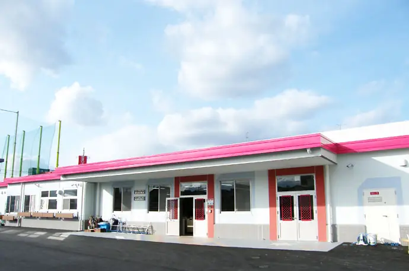
NEW!子どもたちにも大人気☆
広くてすてきな新園舎
新園舎は広くてすてき！子どもたちも毎日、きれいな設備で快適に過ごしています。
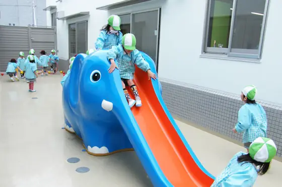
中庭からの明るい陽射し。中庭の遊具では、上靴のままで遊べます。
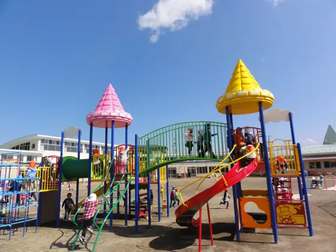
参観・音楽会・おゆうぎ会・展覧会も、人数制限なしで行えるようになりました。
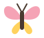
About
ハル幼稚園について
お子様のすばらしい能力を、
花咲かせます。
大切なお子様お一人おひとりの個性を輝かせるよう、教職員一同、一生懸命がんばっています。どろんこ遊びやお絵かきなどののびのび保育から、英語・体操・プール・音楽やパソコン・知能教育まで。3才児から全員に保育料の中ですべて体験していただき、社会性と心を育てる、バランスの取れた教育を行います。
園長春山 ひなた
PLAYのびのび保育
どろんこ遊びやお絵かきで、思いきり体を動かし、感じる心を育てます。
THINK知能教育
運動あそびと「SIあそび」で、脳がいちばん育つ幼児期に考える力を伸ばします。
HEART思いやりの心
自分の意見をしっかり持ち、思いやりの心で人と接することができるよう導きます。
- 特別講師の指導
- 3才から
- 叱らない教育の研究
- 20年以上
- 送迎バス
- 24コース
- バスの停留所
- 220か所
SI Asobi
ハル幼稚園といえば
『SIあそび』
自ら考え、気づき、工夫する力を育てる知能教育です。
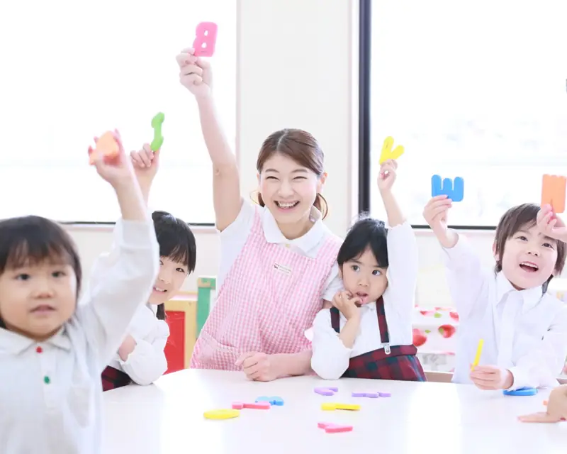
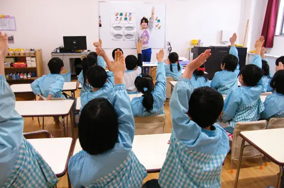
しからないで、ほめて、
みんなニコニコ。
SIあそびの時間には、絶対に叱らない指導方法をとっています。一人ひとりの考え方を大切にし、認めて、ほめます。正しい答えに導くための言葉かけやヒントの出し方を、常に研究して実践しています。
- あそぶ勉強だと思わずに夢中で
- ほめられる考えたことを認めてもらえる
- 勉強大好き！努力することが好きな人に
SIあそびとは
南カリフォルニア大学名誉教授 J・P・ギルフォード博士の知能構造（SI）論にもとづく、遊びながら知能を高める英才教育です。数や言葉、記憶力、判断力、情緒など、あらゆる能力を伸ばします。『叱らない教育方法』は20年以上の研究の成果です。
Special Lessons
3才から
特別講師による指導！
普通保育の中で行うので、保育料の別途徴収はありません。
絵画造形
英語
プール
体操
声楽
パソコンで
年長のみ
ローマ字ご希望の方は
課外保育もお茶・お花・剣道・鼓笛隊・ソロバンなど
Life
幼稚園での生活
1日、1年、バス通園。園での毎日をご紹介します。
Daily1日の流れ
登園
バスや徒歩で「おはよう！」
自由あそび
園庭や中庭の遊具で
SIあそび・特別講師
英語・体操・絵画など
お昼ごはん
みんなでいただきます
午後のあそび
絵本やどろんこ遊び
降園
「また明日ね！」
あずかり保育
お迎えまで安心
Events1年の行事
SPRINGはる
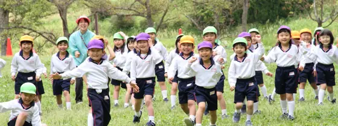
- 4月
- 入園式
- 5月
- 親子遠足
- 6月
- 幼年消防クラブ
SUMMERなつ
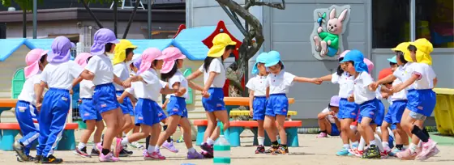
- 7月
- プール指導
- 7月
- 七夕まつり
- 8月
- 夏まつり
AUTUMNあき
- 9月
- いもほり
- 10月
- 運動会
- 11月
- 展覧会
WINTERふゆ
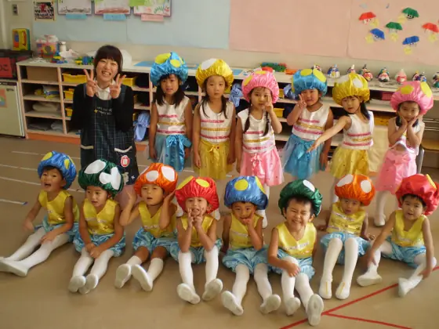
- 12月
- おゆうぎ会
- 2月
- 音楽会
- 3月
- 卒園式
送迎バスのご案内
送迎バスは18＋6コース、停留所は220か所。「自宅のすぐ側まで」を基本に、毎年見直しています。
Teachers
先生紹介
どんな小さなことでも、
気軽に声をかけてくださいね。
Today
今日の幼稚園
おゆうぎや見学会など、毎日の活動の様子をお届けします。
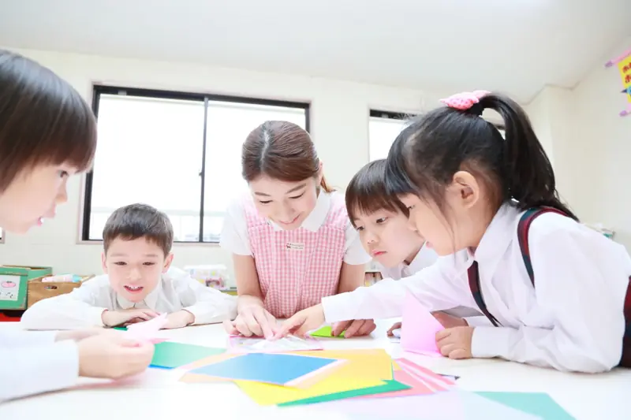
折り紙あそび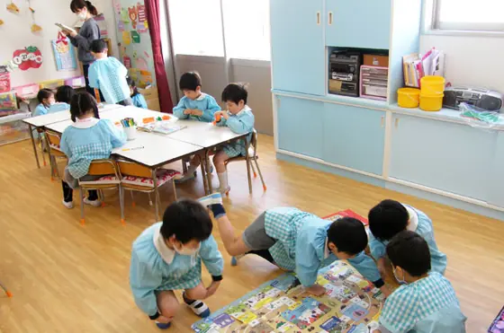
かるた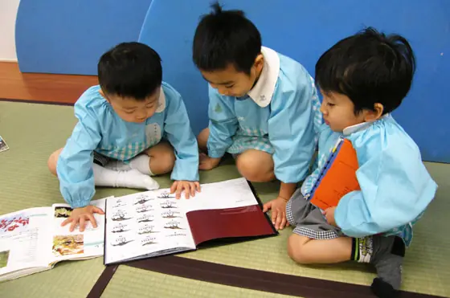
絵本タイム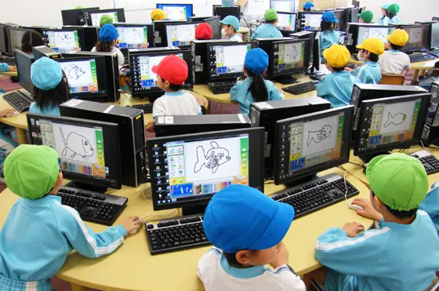
パソコン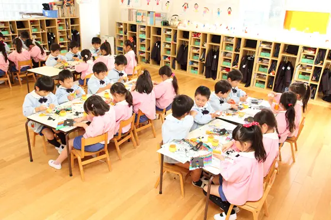
お昼ごはん
Contact
お問合せ・資料請求
パンフレットをご希望の方には郵送いたします。
見学・園庭体験も随時受付中です（行事で閉まっている日もあるため、前日までにお電話ください）。
Access
アクセス
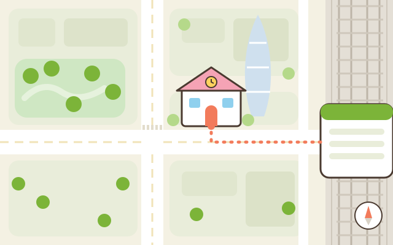
ハル幼稚園 JR新宿駅 西口 徒歩3分 ← 都庁方面- 住所
- 〒160-0023
東京都新宿区西新宿1-7-3 - 電車
- JR新宿駅 西口から徒歩3分
- 電話
- 03-3344-1010
- 見学
- 随時受付（前日までにお電話ください）
- 送迎バス
- 18＋6コース・停留所220か所